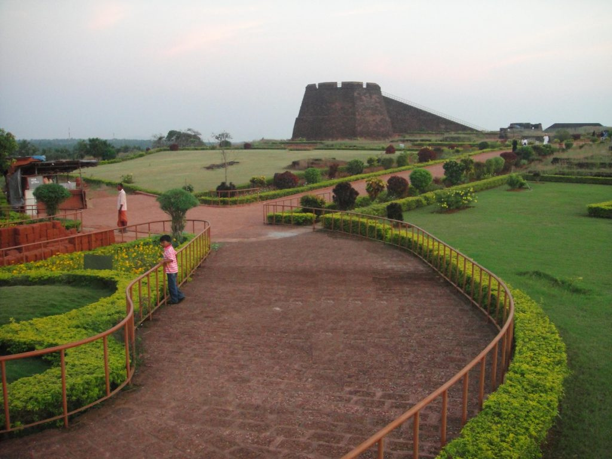

Kasargod is the northernmost district of kerala.Kasargod is known as the land Yekshgana and Theyyams. There are different views on the derivation of the name "Kasargod".One view is that it is the combination of two Sanskrit words "kaasaara"(which means lake or pond) and “ kroda “(which means a place where treasure is kept). Another view is that it is the place where Kaasaraka trees (Strychnos nux vomica or Kaanjiram or Kaaraskara) are in abundance. Bothe views are relevant as there are large number of rivers, lakes and ponds in the coastal belt of the district besides thick flora consisting of innumerable varieties of trees, shribs etc. particularly plentitude of Kaasaraka trees.

Bekal Fort
The 300 year old Bekal Fort is one of the largest and best preserved forts in Kerala.This imposing circular structure of laterite sites rises 130 ft. above sea level.
Pallikare Beach
This Shallow beach offers a spectacular view of the fort and has ample facilities for recreation and relaxation.
Anantapura Lake Temple
This 9th century temple is the only lake temple in Kerala and is the moolasthanam(original abode) of Anandapadmanabha, the deity of Sri. Padmanabha Swami Temple,Thiruvananthapuram.
Kasargod was known to the Arabs by the name Harkwillia. Many Arab travelers who visited Kerala between the 9th and the 14th centuries visited Kasargod, which was an important trade centre then. Duarte Borbosa, the Portuguese traveler who visited Kumbla, near Kasargod in 1514, recorded rice being exported for coir to Maldives. Dr. Francis Buccanan, who was the family doctor of Arthur Wellesley, visited Kasargod in 1800. In his travelogue, he recorded information on places like Athiraparambu, Kavvai, Nileshwaram, Bekal, Chandragiri and Manjeshwaram.The river “ Chandragiri “assumes its name Chandragiri from the name of the place of its source Chandragupta Vasti; where the great Maurya emperor Chandragupta is believed to have spent his last days as a sage.